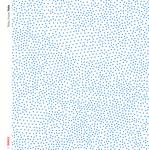

| Artist: | Tetsu Inoue |
| Title: | Yolo |
| Label: | DiN 22 |
| Length(s): | 52 minutes |
| Year(s) of release: | 2005 |
| Month of review: | [04/2006] |
| 1) | Tane | 6.12 |
| 2) | Remote | 6.14 |
| 3) | Particular Moments | 4.57 |
| 4) | Curve | 5.36 |
| 5) | O Shape | 5.32 |
| 6) | Flow | 5.11 |
| 7) | S Equation | 4.15 |
| 8) | Sour Cloud | 2.34 |
| 9) | Super Nature | 5.16 |
| 10) | Spirit Of Data | 5.58 |
Particular Moments shows again that Yolo should be listened to in isolation. The volume tends to be low, and even though sparse, the music is minutely detailed, and it would be a waste to miss out on some of that. The music stays low-key throughout the track. Curve has a repetitive and melancholy sound, with the creaking sounds of swings in the back. The evoked feeling is one of loneliness, and since the swings go a bit too fast, a bit spooky too.
O Shape is a floating ambient style piece, with alongside the smooth flowing synths, plenty of warblings. The music is strongly vibrant here, and continues to be warm, notwithstanding the jagged details that continually crop up. Flow has the serenity and sounds of a tropical night, with a bit of percussion in the back. Except for the lack of trumpet, my mind wanders towards Jon Hassell. The second half seems more somber, maybe it has become night, and many of the insects also have gone to sleep. S Equation is just as tranquil, but
Sour Cloud seems like a bunch of wasps in a bad mood, and behind it lies a dark cloud, a sense of foreboding. The sounds are low, cavernous. Super Nature is also somewhat darker than the earlier tunes. It is a spooky morass of industrially styled sounds and effects. Nothing heavy, but low and with plenty of drone to it. Later the sounds become more harrowing, noisier.
Spirit Of Data has some lighter elements, which is a good thing, because it closes the album. Still, in the middle we get plenty